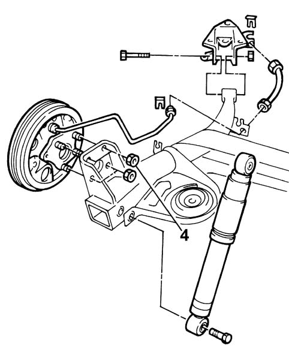
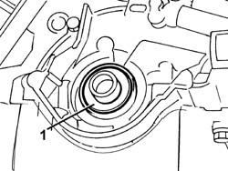
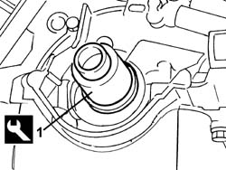

1020D20 FRONT CRANKSHAFT COVER OIL SEAL - REPLACE FOR VERSIONS WITH AIR CONDITIONER
- Path
- Procedures > 10 ENGINE UNIT > 1020 CRANKCASE SUMP AND COVERS > 1020D OIL SEALS ON CRANK SHAFT > 1020D20 FRONT CRANKSHAFT COVER OIL SEAL - REPLACE FOR VERSIONS WITH AIR CONDITIONER
- Kind
- repair procedure (removal / refitting; the operation number is the code)
- Applies to
- engines: 1.1, 1.2 8v; all production periods
- Interactive page
- https://sloeber94.github.io/elrnDB-fPnd/en/#/2752429
Applies to: engines: 1.1; all production periods
 Removing
Removing
 Refitting
Refitting
Applies to: engines: 1.2 8v; all production periods
Removing
RefittingOp. 1048A10 AIR CLEANER FILTERING ELEMENT - REPLACE
Op. 5510C30 ENGINE TIMING SENSOR - R+R
Op. 4450B04 RIGHT FRONT WHEEL R R
Op. 7055B54 UNDER-ENGINE GUARD - R R
Op. 1092B40 AIR CONDITIONER COMPRESSOR/ALTERNATOR DRIVE BELT - R + R
Op. 1092A12 CRANKSHAFT PULLEY - R+R FOR VERSIONS WITH AIR CONDITIONER
Op. 1032D12 TIMING SYSTEM PROTECTIVE COVER(S) - R + R
Op. 7055A42 FRONT GRILLE - R+R
Op. 1032B44 TOOTHED DRIVE PULLEY - R + R WITH TIMING BELT REMOVED
1. Release and remove the crankshaft oil seal cover.
The oil seal is destroyed by the removal operation.

Applies to: engines: 1.2 8v; all production periods
Refitting
Removing1. Use the special fitting tool and fit the new crankshaft cover oil seal.
Description | Code | |
|---|---|---|
1 | Fitting tool | 1.860.903.000 |

Applies to: engines: 1.2 8v; all production periods
Op. 1032B44 TOOTHED DRIVE PULLEY - R + R WITH TIMING BELT REMOVED
Op. 7055A42 FRONT GRILLE - R+R
Op. 1032D12 TIMING SYSTEM PROTECTIVE COVER(S) - R + R
Op. 1092A12 CRANKSHAFT PULLEY - R+R FOR VERSIONS WITH AIR CONDITIONER
Op. 1092B40 AIR CONDITIONER COMPRESSOR/ALTERNATOR DRIVE BELT - R + R
Op. 7055B54 UNDER-ENGINE GUARD - R R
Op. 4450B04 RIGHT FRONT WHEEL R R
Topics linked from this page (11)
- 1032B14 toothed timing belt - r + r for timing adjustment or replacement versions with air conditioner
- 1032B44 toothed drive pulley - r + r with timing belt removed
- 1032D12 timing system protective cover(s) - r + r
- 1048A10 air cleaner filtering element - replace
- 1092A12 crankshaft pulley - r+r for versions with air conditioner
- 1092B40 air conditioner compressor/alternator drive belt - r + r
- 4450B04 right front wheel r r
- 5510C26 rpm sensor - r+r
- 5510C30 engine timing sensor - r+r
- 7055A42 FRONT GRILLE - R+R
- 7055B54 UNDER-ENGINE GUARD - R R